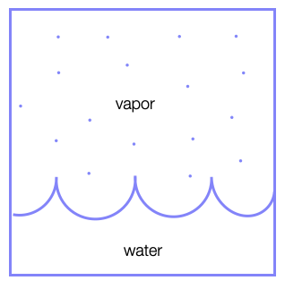
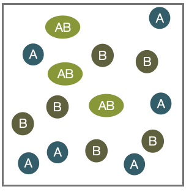
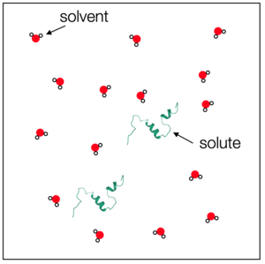
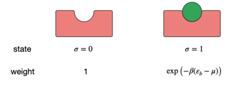

This page was generated from notebooks/L4/2_Chemical_Potential.ipynb.

Equilibration of the chemical potential#
We have seen that for two compartments, e.g. bath and system, to be in equilibrium, their chemical potentials have to be equal to one another. If, for example, the system has a lower chemical potential, the total free energy can be lowered by moving particles from the bath into the system.
The chemical potential is useful in many situations. For example, to determine
Phase equilibria#
In this case, we have a boundary between two phases (e.g., liquid and vapor) and particles of the vapour phase may join the liquid phase and vice versa. In this case, the number of vapor particles \(N_{\rm vapor}\) and the number of liquid particles \(N_{\rm liquid}\) is not fixed, but the total number of particles \(N=N_{\rm vapor}+N_{\rm liquid}\) is.
Chemical equilibria#
In the case of chemical equilibria, two species \(A\) and \(B\) may react to form a new species \(AB\) by a chemical reaction:
\begin{equation} A+B \rightleftharpoons A B. \end{equation}
Here the individual numbers of particles \(N_A\),\(N_B\) and \(N_{AB}\) are not fixed, but \(N_A + N_{AB}\) and \(N_B+N_{AB}\) are.
Example: Free energy of a dilute solution
We would like to calculate the free energy and the chemical potential for a dilute solution of some solutes in a solvent, which we just term H\(_2\)O. Actually, no additional information on the details of the solute and solvent are currently required, though if we want to have numbers, we would need to know which solute or solvent we are looking at.
Suppose we have
\(N_{\rm H_2 O}\) solvent molecules (e.g., water),
\(N_{\rm s}\) solute molecules (e.g., proteins).
The solute chemical potential is defined by
\begin{equation} \mu_{\rm s}=\left( \frac{\partial G_{\rm tot}}{\partial N_{\rm s}}\right)\bigg|_{p,T} \end{equation}
or intuitively as
\begin{equation} \mu_{\rm s}=G_{\rm tot}(N_{\rm s}+1)-G_{\rm tot}(N_{\rm s}). \end{equation}
The total free energy \(G_{\rm tot}\) consists of the enthalpy of forming the solvent molecules \(N_{\rm{H_{2}O}}\varepsilon_{\rm H_{2}O}\) and the enthalpy solvating the solute proteins \(N_{\rm s}\varepsilon_{\rm s}\).
\begin{equation} G_{\rm tot}=N_{\rm{H_{2}O}}\varepsilon_{\rm H_{2}O}+N_{\rm s}\varepsilon_{\rm s}-TS_{\rm mix}. \end{equation}
We compute the mixing entropy directly from the Boltzmann entropy
\begin{equation} S_{\rm mix}=k_{\rm B}\ln(\Omega). \end{equation}
We will use the latter definition including the number of possible configurations to obtain the mixing entropy. If the total number of molecules in the volume is \(N=N_{\rm H_2O}+N_{\rm s}\), we can write down the number of different ways to arrange the molecules as previously done. We obtain:
\begin{equation} \Omega(N_{\rm H_2O}, N_{\rm s} )=\frac{N!}{N_{\rm H_2O}! N_{\rm s}!}. \end{equation}
As in our example with the DNA binding, we can apply the Stirling formula for large \(N\) and find
\begin{equation} S_{\rm mix}=-k_\mathrm{B} \left ( N_{\rm H_2O} \ln\left (\frac{N_{\rm H_2O}}{N_{\rm H_2O}+N_{\rm s}}\right) +N_{\rm s}\ln\left (\frac{N_{\rm s}}{N_{\rm H_2O}+N_{\rm s}} \right )\right ). \end{equation}
To really go in the dilute limit, the number of solute molecules should be much larger than the number of solvent molecules, i.e.,
which allows us to approximate the solution with
\begin{equation} S_{\rm mix}\approx -k_\mathrm{B} \left ( N_{\rm H_2O} \ln \left ( 1-\frac{N_{\rm s}}{N_{\rm H_2O}}\right) +N_{\rm s}\ln\left ( \frac{N_{\rm s}}{N_{\rm H_2O}}\right)\right ) \end{equation} employing the Taylor series expansion of \(N_{\rm H_2O}/(N_{\rm H_2O}+N_{\rm s})=1/(1+N_{\rm s}/N_\mathrm{H_2O})\) at \(N_{\rm s}/N_\mathrm{H_2O}\approx 0\).
Using
we may finally write
\begin{equation} S_{\rm mix}\approx -k_\mathrm{B} \left ( N_{\rm s} \ln \left ( \frac{N_{\rm s}}{N_{\rm H_2O}}\right) -N_{\rm s}\right ) \end{equation}
and the total free energy is then given by
\begin{equation} G_{\rm tot}=N_{\rm{H_{2}O}}\varepsilon_{\rm H_{2}O}+N_{\rm s}\varepsilon_{\rm s}+k_\mathrm{B} T \left ( N_{\rm s} \ln \left ( \frac{N_{\rm s}}{N_{\rm H_2O}}\right) -N_{\rm s}\right ). \end{equation}
We can now come back and calculate the chemical potential of the solute as noted above
\begin{equation} \mu_{\rm s}=\epsilon_{\rm s}+k_{\rm B} T \ln \left ( \frac{N_{\rm s}}{N_{\rm H_2O}}\right ). \end{equation}
As we rather work with concentrations than number of molecules we can use \(c=N_{\rm s}/V\) and \(c_0=c_{\rm H_2O}=N_{\rm H_2O}/V\) to write
\begin{equation} \mu_{\rm s}=\epsilon_{\rm s}+k_{\rm B} T \ln \left ( \frac{c}{c_0}\right ). \end{equation}
The value of \(c_0\) thereby acts as a reference point, which is commonly chosen to be at \(c_0=1\,{\rm M}\). The value of \(\epsilon_{\rm s}\) is termed the standard chemical potential \(\mu_{\rm s}^{0}\). The standard chemical potential is measured at standard thermodynamic conditions, i.e. \(p_0=101.3\, {\rm kPa}\) and \(T=293.15\, {\rm K}\), and \(c_0=1\, {\rm M}\).
In a mixed system, we define the chemical potential of a component \(i\) as the sum of two components
\begin{equation} \mu_i=\mu_i^0+k_\mathrm{B} T \ln \left ( \frac{c_i}{c_{i,0}}\right ). \end{equation}
The standard chemical potential is a molecular property (see slides) that contains
the internal energy/enthalpy to create the molecule,
the conformational entropy of the molecule, and
the enthalpy and entropy contributions when bringing the molecule into contact with the solvent (solvation free energy).
The logarithm term \(k_\mathrm{B} T \ln \left ( \frac{c_i}{c_{i0}}\right )\) is the pure mixing/dilution entropy reflecting the different abundance of solute and solvent due to the resulting numbers of microstates.
For a solvent we consequently write
\begin{equation} \mu_{\rm H_2O}=\frac{\partial G_{\rm tot}}{\partial N_{\rm H_2O}}\bigg|_{T,p}=\mu_{\rm H_2O}^{0}-k_\mathrm{B} T\ln\left ( \frac{c_{\rm s}}{c_{\rm H_2O}}\right). \end{equation}
Finally, a chemical potential may be also defined for gases, e.g., for the ideal gas:
\begin{equation} \mu_{\rm iG}=k_\mathrm{B} T \ln\left (\frac{p}{p_0}\right) \end{equation}
which only has entropic contributions.
Example: Ligand Binding
As an example, we have a look at the binding of a ligand (green) to a receptor, which is indicated in the figure below.
The binding is reported by the variable \(\sigma\), which can be either 0 or 1. The binding energy is therefore
\begin{equation} E=\sigma \varepsilon_\mathrm{b} \end{equation}
with \(\varepsilon_\mathrm{b}<0\), since the ligand wants to bind. The grand partition function
\begin{equation} Z=\sum_{\rm states}\exp\left ( -\beta (E_{\rm state}- \mu N_{\rm state}) \right ), \end{equation}
in which the chemical potential \(\mu\) reflects the contact with the particle reservoir and \(\beta=(k_\mathrm{B}T)^{-1}\), can therefore be written as:
\begin{equation} Z=\sum_{\sigma=0}^{1}\exp\left ( -\beta (\varepsilon_\mathrm{b} \sigma- \mu \sigma) \right )=1+\exp(-\beta (\varepsilon_\mathrm{b} -\mu )). \end{equation}
From that we can calculate the mean number of bounded ligands to be
\begin{equation} \langle N \rangle =\frac{\exp(-\beta (\varepsilon_\mathrm{b} -\mu ))}{1+\exp(-\beta (\varepsilon_\mathrm{b} -\mu ))}. \end{equation}
Using
\begin{equation} \mu = \mu_0 + k_\mathrm{B} T \ln \left ( \frac{c}{c_0}\right ) \end{equation}
we can finally write
\begin{equation} \langle N \rangle =\frac{c/c_0 \exp(-\beta \Delta \varepsilon_\mathrm{b})}{1+\frac{c}{c_0}\exp(-\beta \Delta \varepsilon_\mathrm{b})} \end{equation}
with \(\Delta \varepsilon_\mathrm{b}=\varepsilon_\mathrm{b}-\mu_0\), which is the energy freed when taking the ligand from the solution and placing it at the acceptor.
Example: Barometric height formula
We can have a look again at the barometric height formula using the framework of the chemical potential. Each height \([h,h+\mathrm{d}h]\) is exchanging particles with other heights until the chemical potential in all regions is the same. We can thus write
\begin{eqnarray} \mu(h=0)&=&\mu_{0}(h=0)+k_\mathrm{B} T\ln \left ( \frac{n(h=0)}{n_0}\right )\\ &=&\mu_{0}(h)+k_\mathrm{B} T \ln \left ( \frac{n(h)}{n_0}\right ) \end{eqnarray}
The standard chemical potential is just given by the potential energy, i.e.:
and
which then leads us to
\begin{equation} -mgh=k_\mathrm{B} T\left ( \ln \left( \frac{n(h)}{n_0} \right ) -\ln \left( \frac{n(h=0)}{n_0} \right ) \right). \end{equation}
This finally leads us to
\begin{equation} \frac{n(h)}{n(h=0)}=\exp\left (-\frac{mgh}{k_B T} \right ) \end{equation}
which is, of course, the barometric height formula.
[ ]: